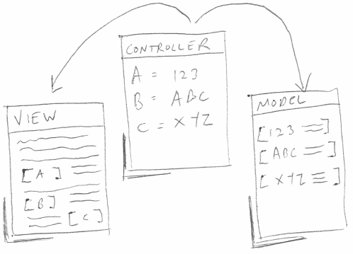

Having done a lot of legal drafting in my time and a little coding also, I started to notice a few similarities between the two processes which I thought I'd write about. I also talk about one way in which the two processes diverge.
Avoiding repetition and keeping things DRY
When drafting legal documents, I'll sometimes find myself repeating a specific phrase or collection of words. To remove this repetition, you can create a defined term and then use the same defined term throughout the agreement.
For example "Confidential Information" can be defined and then re-used throughout the agreement (making it as broad or as narrow as you might like, subject to enforceability).
This could be broadly analogous to using functions to collect together a specific area of functionality which can then be re-used without repeating the original code.
Separation of concerns
When you're working in an organisation with agreements that will be re-used frequently and by non-lawyers, it's good to separate out firstly as much as possible content that will need to change each time the document is used, and secondly content that is standard and is therefore unlikely in the first instance to change. Although sending it over to the other side's lawyers is a different matter.
This can be done by moving changeable terms (price, delivery schedule, licence period etc) from the main body of the agreement into a schedule. This way when it comes to be re-used the user will only need to update the schedule and will not have to get involved with the main body of the agreement. Overall this hopefully means that the time to get a contract out to the other side is greatly reduced, or at least that's the plan.
This has parallels with avoiding the use of CSS and Javascript inline in HTML. If for example you're allowing a user to customise a simple layout, then there isn't necessarily a need to have the user interact with the HTML itself as, depending on the circumstances of course.
If everything is inline and a jumble of CSS, JS and HTML I would argue this increases the chances of a particular style update being missed (as is the case with an agreement, where the risk of missing an update to a changeable term is increased if everything is within the body of the agreement).
Straining the analogy
You could go as far as to say that the main body of an agreement is the view, the schedule with variables is the model, and the definitions section is the controller/router, providing the glue between the model and the view, defining how the terms in the schedule (price, payment terms, work period) are used in the view.

User feedback
A little trite, but both from a legal and a coding perspective, it's really important to have the results of your efforts reviewed by those who will be actually using the end result. Within my organisation, after I've drafted the document it will go out to the people who asked me to draft it in the first place for comments.
As a side-note, whether or not they'll give it a thorough read-through depends a) on the person's dedication to ensuring the terms of the proposed work are accurately reflected in the agreement and b) their trust in the abilities of the legal department!
In both cases you'll quickly find out what the important parts are and where improvements are desired, even if perhaps the full extent of the work isn't thoroughly assessed. If you're working for a services-based organisation, the expenses clause is generally the most important aspect of the agreement.
Modularity
Most agreements will have a set of standard clauses which you will find in most agreements, like choice of law, limitation of liability, assignment, waiver, and variation. Being able to slot these in and not have to worry about drafting new clauses each time takes time out the drafting process. This leaves time to focus on the elements unique to the agreement.
In the same way, when coding web applications, you will most likely have standard pieces of functionality like user authentication and file uploads, or frameworks like Foundation, Bootstrapand Pure.CSS for the appearance of an app. Mozilla's Brick and Google's Polymer also open up the possibility of packaging up discrete elements of functionality.
But where do they differ?
It's fair to say there's one pretty glaring way in which the two processes differ. If I want to draft a document I'm much more restricted in the way I can go out and grab existing examples that are free to use.
This is in stark contract to the many open source options that are available to help a person to quickly incorporate functionality into an app (at least in my experience in using Node.js and Express).
Some folks including Legal Zoom and Docracy are taking steps to simplify the process for many users of legal services (in the case of the former and the latter) and to allow lawyers to provide and comment on agreements (in the case of the latter).
However at present there isn't a widely-used service like Github where to extend the analogy and in the context of open source code, lawyers from different firms collaborate on improving documents used by all or used by many different people1 (perhaps an overly broad definition) or lawyers might develop a set of wording internally and decide to release it for general consumption.
Whether this will change in the future remains to be seen however, there are good reasons for this reduced participation:
I'm not saying that many of these reasons cannot be overcome but at present the above barriers are sufficient to prevent wider participation by lawyers in open sourcing of legal documentation2.
As for the future, it will be interesting to see whether start-ups operating in the legal sector will be able to exert sufficient influence or make it attractive enough for large volumes of lawyers to start doing this.
There are movements in certain niche areas where lawyers do collaborate to improve documents to a standard like ISDA (for financial swaps and derivatives) and the JCT for construction contracts but this is still a relatively closed system and is the exception rather than the rule. ↩
One counter-example is the Innovators Patent Agreement. ↩